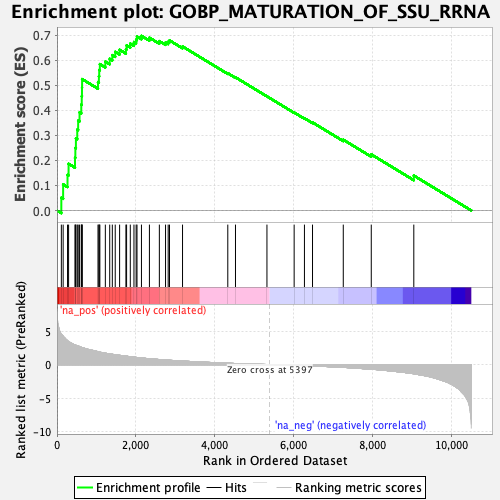
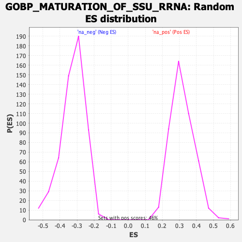

| Dataset | qlf.KOd4vsWTd4_gsea_score |
| Phenotype | NoPhenotypeAvailable |
| Upregulated in class | na_pos |
| GeneSet | GOBP_MATURATION_OF_SSU_RRNA |
| Enrichment Score (ES) | 0.69691616 |
| Normalized Enrichment Score (NES) | 2.20596 |
| Nominal p-value | 0.0 |
| FDR q-value | 0.0 |
| FWER p-Value | 0.0 |

| SYMBOL | RANK IN GENE LIST | RANK METRIC SCORE | RUNNING ES | CORE ENRICHMENT | |
|---|---|---|---|---|---|
| 1 | RCL1 | 110 | 4.509 | 0.0508 | Yes |
| 2 | BYSL | 156 | 4.245 | 0.1043 | Yes |
| 3 | NOB1 | 267 | 3.545 | 0.1420 | Yes |
| 4 | TSR2 | 294 | 3.446 | 0.1864 | Yes |
| 5 | TBL3 | 457 | 2.929 | 0.2107 | Yes |
| 6 | TSR1 | 466 | 2.916 | 0.2496 | Yes |
| 7 | PWP2 | 480 | 2.887 | 0.2877 | Yes |
| 8 | WDR46 | 514 | 2.812 | 0.3228 | Yes |
| 9 | NOL11 | 537 | 2.779 | 0.3585 | Yes |
| 10 | UTP20 | 572 | 2.682 | 0.3917 | Yes |
| 11 | DCAF13 | 616 | 2.575 | 0.4226 | Yes |
| 12 | NOL10 | 628 | 2.546 | 0.4562 | Yes |
| 13 | RPS8 | 634 | 2.532 | 0.4902 | Yes |
| 14 | NAT10 | 637 | 2.531 | 0.5244 | Yes |
| 15 | RIOK2 | 1040 | 1.931 | 0.5123 | Yes |
| 16 | DHX37 | 1063 | 1.880 | 0.5357 | Yes |
| 17 | HEATR1 | 1071 | 1.869 | 0.5605 | Yes |
| 18 | RRS1 | 1087 | 1.849 | 0.5842 | Yes |
| 19 | SRFBP1 | 1226 | 1.703 | 0.5942 | Yes |
| 20 | UTP6 | 1337 | 1.591 | 0.6053 | Yes |
| 21 | WDR3 | 1403 | 1.538 | 0.6200 | Yes |
| 22 | RPS16 | 1477 | 1.472 | 0.6331 | Yes |
| 23 | NOP14 | 1588 | 1.381 | 0.6413 | Yes |
| 24 | ABT1 | 1748 | 1.266 | 0.6434 | Yes |
| 25 | LSM6 | 1765 | 1.254 | 0.6589 | Yes |
| 26 | RPS19 | 1859 | 1.177 | 0.6660 | Yes |
| 27 | RPP40 | 1952 | 1.113 | 0.6724 | Yes |
| 28 | UTP3 | 2007 | 1.074 | 0.6818 | Yes |
| 29 | NOP9 | 2029 | 1.056 | 0.6942 | Yes |
| 30 | RPS14 | 2142 | 0.988 | 0.6969 | Yes |
| 31 | RIOK1 | 2344 | 0.876 | 0.6896 | No |
| 32 | ERCC2 | 2596 | 0.759 | 0.6760 | No |
| 33 | RPS28 | 2753 | 0.690 | 0.6704 | No |
| 34 | BMS1 | 2820 | 0.663 | 0.6732 | No |
| 35 | RPS21 | 2853 | 0.648 | 0.6789 | No |
| 36 | GTF2H5 | 3184 | 0.531 | 0.6546 | No |
| 37 | MRPS11 | 4332 | 0.211 | 0.5479 | No |
| 38 | RRP36 | 4527 | 0.162 | 0.5315 | No |
| 39 | NGDN | 5325 | 0.015 | 0.4556 | No |
| 40 | UTP23 | 6015 | -0.099 | 0.3911 | No |
| 41 | TSR3 | 6276 | -0.149 | 0.3682 | No |
| 42 | HELB | 6481 | -0.196 | 0.3514 | No |
| 43 | DDX52 | 7261 | -0.403 | 0.2824 | No |
| 44 | KRI1 | 7971 | -0.682 | 0.2240 | No |
| 45 | RIOK3 | 9050 | -1.352 | 0.1393 | No |
